MANTENIMIENTO Y REPARACIÓN
SERVICIO EN EL VEHÍCULO
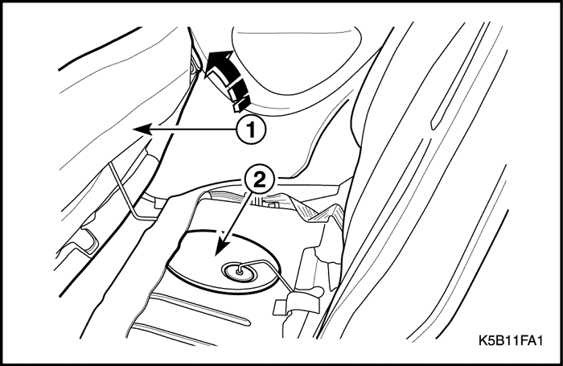


Bomba de combustible
Herramientas necesarias
DW 140-010A Extractor/instalador del anillo de retención de la bomba de combustible.
Procedimiento de desmontaje
Precaución: El sistema de combustible está sometido a presión. Para evitar derrames de combustible y el riesgo de lesiones personales o de incendio, es necesario liberar la presión del sistema de combustible antes de desconectar las tuberías de dicho sistema.
- Libere la presión del sistema de combustible.
- Arranque el motor y desmonte el cojín del asiento trasero (1).
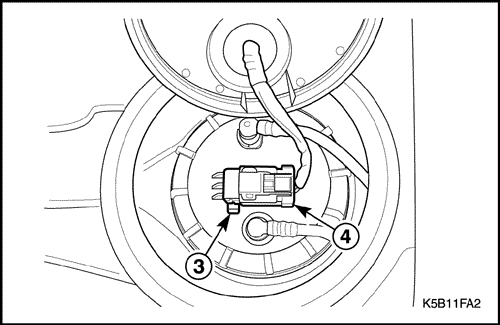
- Desmonte la tapa de acceso a la bomba de combustible (2).
- Retire el pasador de seguridad del conector eléctrico del conjunto de la bomba de combustible (3).
- Desenchufe el conector eléctrico del conjunto de la bomba de combustible (4).
- Siga arrancando el motor durante otros 10 segundos.
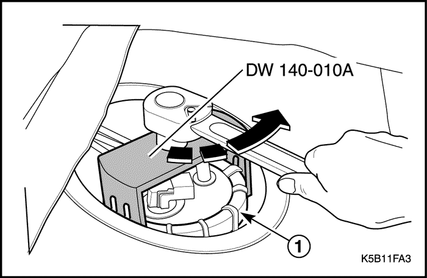
- Desmonte del depósito el conjunto de la bomba de combustible.
- Monte el extractor/instalador del anillo de retención de la bomba de combustible DW 140-010A.
- Gire el anillo de retención del depósito de combustible en sentido contrario al de las agujas del reloj (1).
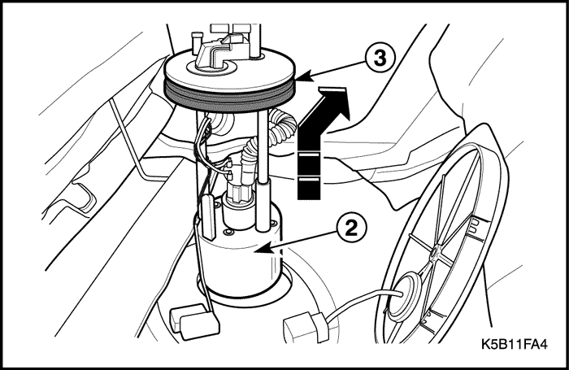
- Desmonte el conjunto de la bomba de combustible (2).
- Desmonte la junta de la bomba de combustible (3).
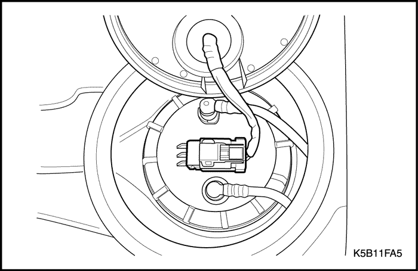
Procedimiento de montaje
- Para el montaje, repita en orden inverso el procedimiento de desmontaje.
- Efectúe una comprobación del funcionamiento de la bomba de combustible.
- Efectúe una comprobación de funcionamiento de la bomba de combustible de 2 segundos con la llave de contacto en posición ON.
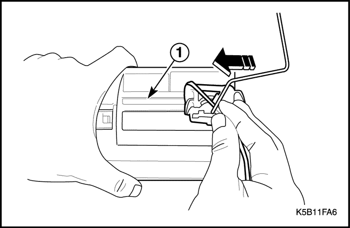
Transmisor de combustible
Procedimiento de desmontaje
- Desenchufe el conector del aislador.
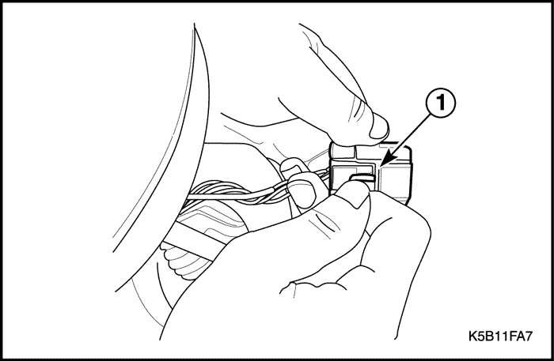
- Presione la cuña del terminal (1) del conector del aislador.
Aviso: La cuña puede desconectarse con carga fuerte, pero se puede volver a conectar.
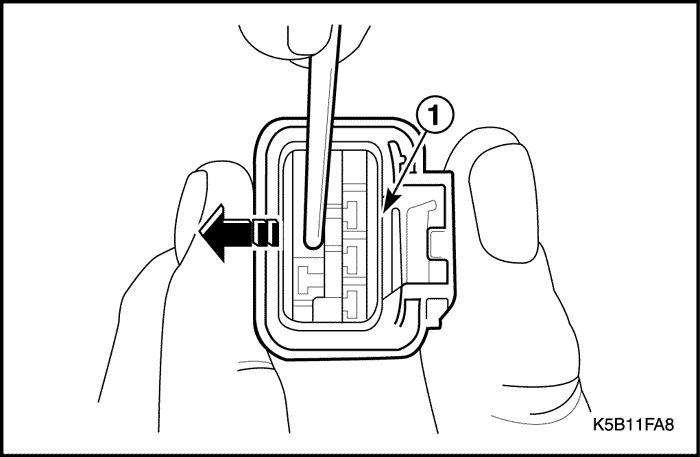
- Presione la cuña (1) hacia afuera y tire luego de los cables para desconectarlos del aislador.
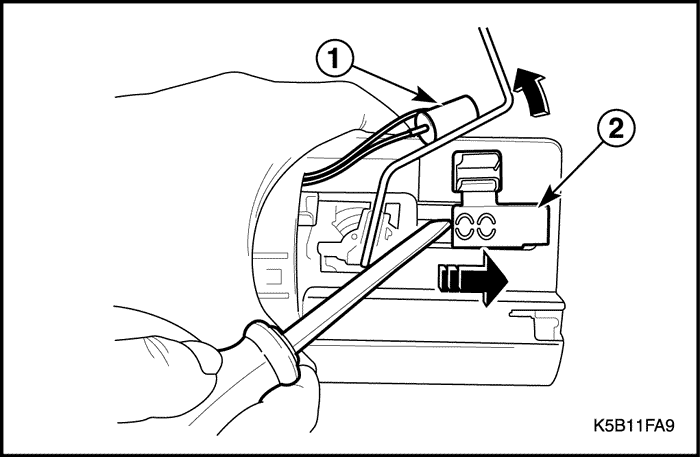
- Desmonte el sensor de nivel de combustible (1) del alojamiento del transmisor (2).
- Desmonte el alojamiento del transmisor (2).
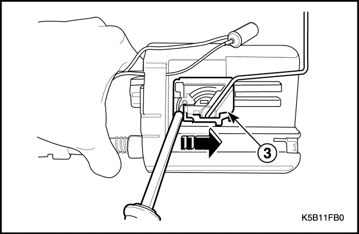
- Desmonte el conjunto del transmisor de combustible (3).
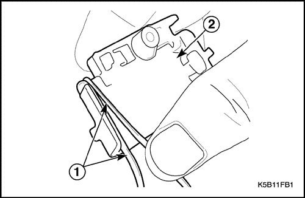
Procedimiento de montaje
- Enrolle los cables (1) del conjunto del transmisor (2).
- Monte el conjunto del transmisor en el conjunto de la bomba de combustible (1).
Aviso: Si no se monta correctamente el conjunto del transmisor, las indicaciones del aforador de combustible serán inexactas.
- Monte el sensor de nivel de combustible en el alojamiento del transmisor.
Aviso: Si no se monta correctamente el sensor de nivel de combustible, las indicaciones de la luz de aviso de nivel de combustible serán inexactas.
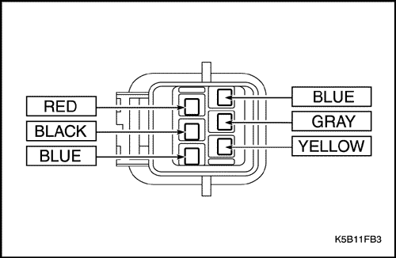
- Enchufe el cable al conector del aislador.
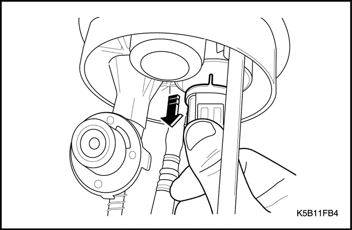
- Enchufe el conector del aislador.
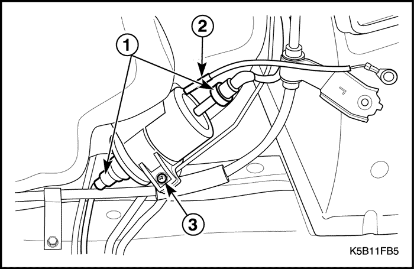
Filtro de combustible
Procedimiento de desmontaje
Precaución: El sistema de combustible está sometido a presión. Para evitar derrames de combustible y el riesgo de lesiones personales o de incendio, es necesario liberar la presión del sistema de combustible antes de desconectar las tuberías de dicho sistema.
- Libere la presión del sistema de combustible. Consulte el apartado "Bomba de combustible"de esta sección.
- Desmonte el filtro de combustible del depósito de combustible.
- Retire las tuberías de entrada/salida de combustible desplazando hacia delante el cierre del conector de la tubería y tirando del manguito para extraerlo del tubo del filtro de combustible (1).
- Desenchufe el conector a masa del filtro de combustible (2).
- Quite el tornillo de la abrazadera de retención (3).
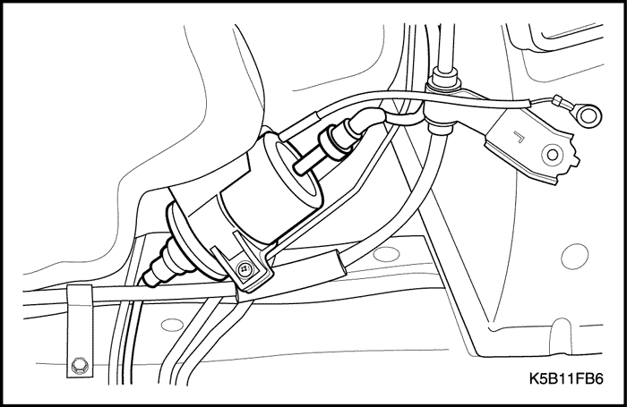
Procedimiento de montaje
- Para el montaje, repita en orden inverso el procedimiento de desmontaje.
- Monte un nuevo filtro de combustible en la abrazadera de retención. Tome nota de la dirección de flujo.
- Conecte las tuberías de entrada/salida. Asegure las tuberías con el cierre del conector.
- Enchufe el conector a masa del filtro de combustible.
- Realice una prueba de fugas en el filtro de combustible.
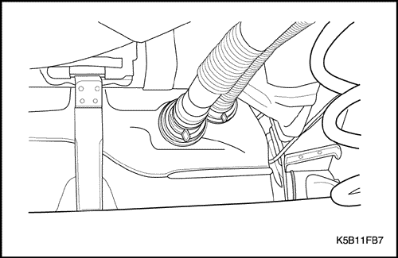
Depósito de combustible.
Procedimiento de desmontaje
Precaución: El sistema de combustible está sometido a presión. Para evitar derrames de combustible y el riesgo de lesiones personales o de incendio, es necesario liberar la presión del sistema de combustible antes de desconectar las tuberías de dicho sistema.
- Libere la presión del sistema de combustible. Consulte el apartado "Bomba de combustible"de esta sección.
- Desconecte las tuberías de entrada/salida del filtro de combustible. Consulte el apartado "Filtro de combustible" de esta sección.
- Desconecte el tubo de llenado de combustible.
- Vacíe el combustible del depósito.
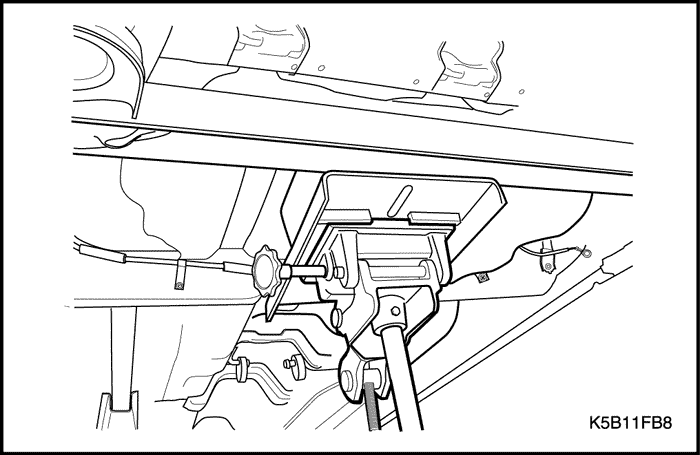
- Use el gato para desmontar el depósito de combustible.
- Coloque el gato en el centro del depósito de combustible.
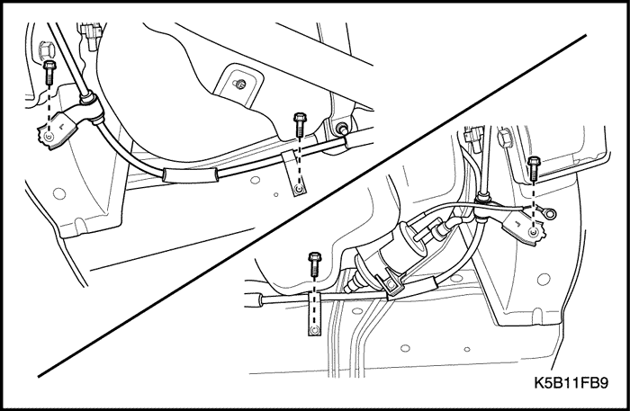
- Quite los tornillos de la abrazadera de ruptura lateral.
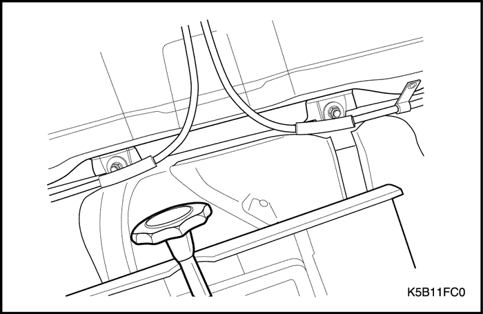
- Quite la abrazadera del depósito de combustible.
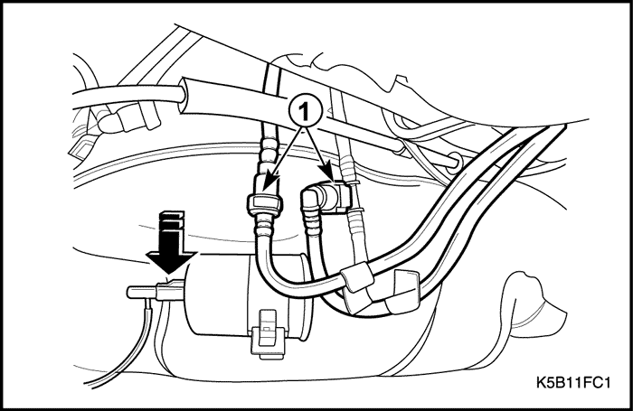
- Mueva hacia abajo el conjunto del depósito de combustible.
- Desenchufe los conectores rápidos del combustible (1).
Procedimiento de montaje
- Para el montaje, repita en orden inverso el procedimiento de desmontaje.
- Una vez terminado el montaje, arranque el motor para evitar un tapón de vapor y compruebe si los manguitos tienen fugas.
- Coloque las tuercas de la abrazadera del depósito de combustible.
Apretar
Apriete las tuercas de la abrazadera del depósito de combustible hasta 18-22 N•m (13-16 lb-pulg.).
- Coloque los tornillos de la abrazadera de ruptura lateral.
Apretar
Apriete los tornillos de la abrazadera de ruptura lateral hasta 10 N•m (89 lb-pulg.).
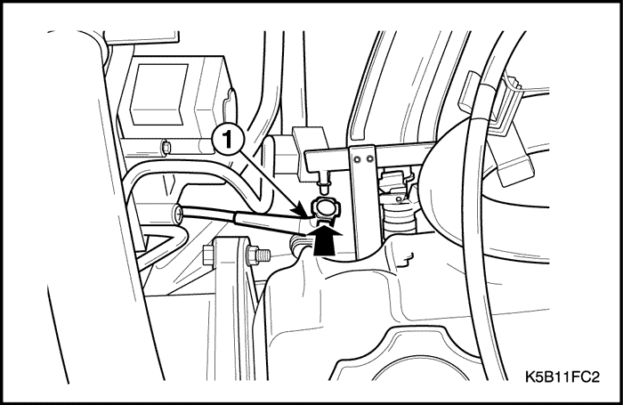
Rampa de inyectores e inyectores
Procedimiento de desmontaje
Precaución: El sistema de combustible está sometido a presión. Para evitar derrames de combustible y el riesgo de lesiones personales o de incendio, es necesario liberar la presión del sistema de combustible antes de desconectar las tuberías de dicho sistema.
- Libere la presión del sistema de combustible. Consulte el apartado "Bomba de combustible"de esta sección.
- Desmonte el cartucho del compartimento motor. Consulte el apartado "Cartucho del sistema de emisiones de vapor" de esta sección.
- Desconecte la tubería de entrada de combustible (1).
- Desenchufe los conectores del cableado de los inyectores de combustible (2).
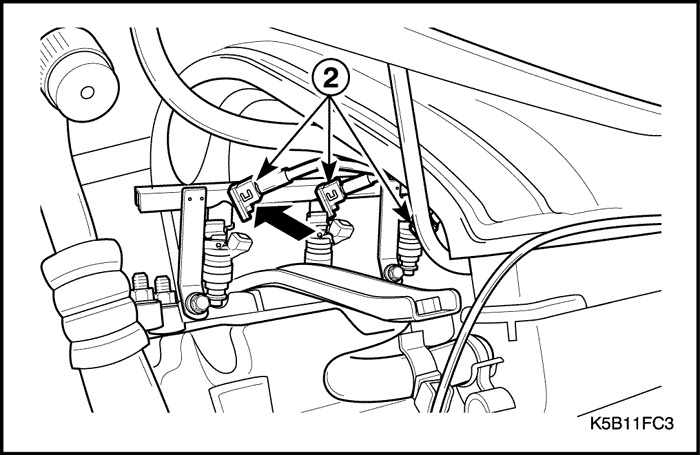
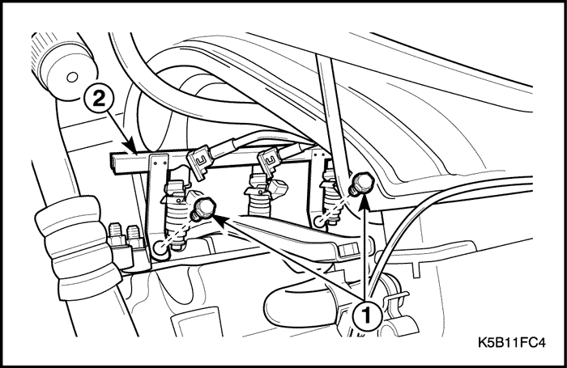
- Desmonte la rampa de inyectores con los inyectores unidos a la misma.
- Retire los tornillos (1).
- Desmonte la rampa de inyectores con los inyectores unidos a la misma (2).
Aviso: Antes del desmontaje, debe limpiarse con un limpiador tipo-spray la rampa de inyectores siguiendo las instrucciones que aparecen en el bote. No sumerja la rampa de inyectores en un disolvente líquido de limpieza. Tenga cuidado al desmontar la rampa de inyectores para evitar daños a los conectores eléctricos y a las toberas pulverizadoras de los inyectores. Evite que la suciedad y otros contaminantes entren en las tuberías y conductos abiertos. Durante la reparación deben taparse los taladros y los racores.
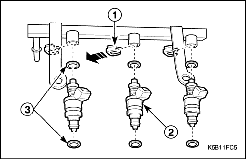
- Desmonte los inyectores de la rampa de inyectores.
- Desmonte los clips de retención de los inyectores (1).
- Desmonte los inyectores tirando de ellos hacia abajo y hacia fuera (2).
- Deseche las juntas tóricas de los inyectores (3).
Importante: Se calibran distintos inyectores de combustible para los distintos caudales. Cuando encargue nuevos inyectores, asegúrese de pedir el mismo número de pieza que el que aparece en el inyector viejo.
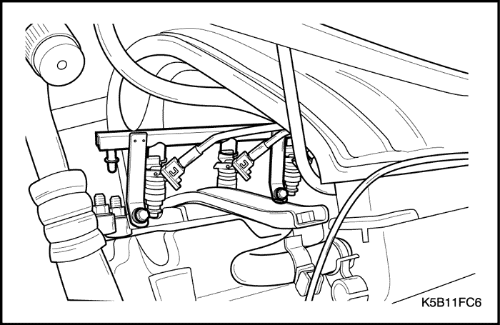
Procedimiento de montaje
- Para el montaje, repita en orden inverso el procedimiento de desmontaje.
Importante: Si se separa un inyector de combustible de la rampa de los inyectores y se queda en la culata, sustituya las juntas tóricas y el clip de retención del inyector.
- Lubrifique con aceite de motor las juntas tóricas nuevas. Monte las juntas tóricas nuevas en los inyectores.
- Coloque los tornillos de retención de la rampa de inyectores.
Apretar
Apriete los tornillos de retención de la rampa de inyectores hasta 11-15 N•m (97-133 lb-pulg.).
- Efectúe una comprobación de fugas en la rampa y en los inyectores.
Cartucho del sistema de emisiones de vapor
Procedimiento de desmontaje
Precaución: El cartucho y los manguitos de vacío contienen vapores de combustible. No fume ni permita la presencia de llamas desnudas en la zona.
- Desconecte el cable negativo de la batería.
- Desmonte el depósito de combustible. Consulte el apartado "Depósito de combustible" de esta sección.
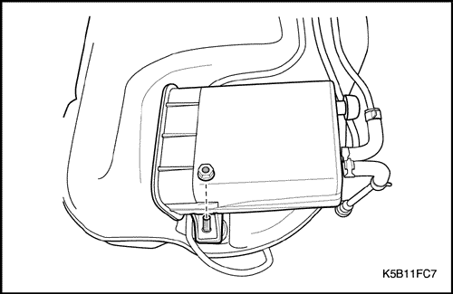
- Desmonte el cartucho.
- Desconecte el tubo.
- Quite la tuerca.
Procedimiento de montaje
- Para el montaje, repita en orden inverso el procedimiento de desmontaje.
- Monte el cartucho.
Apretar
Apriete la tuerca del cartucho hasta 8 N•m (71 lb-pulg.).
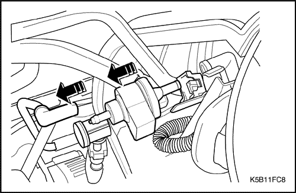
Solenoide de purga del cartucho del sistema de emisiones de vapor
- Desconecte el cable negativo de la batería.
- Desenchufe el conector del solenoide de purga del cartucho del sistema de emisiones de vapor (EVAP).
- Desconecte los manguitos de vacío del solenoide de purga del cartucho del EVAP.
- Retire el clip y desmonte de su soporte de fijación el solenoide de purga del cartucho del EVAP.
- El procedimiento de montaje debe ser el mismo que el procedimiento de desmontaje, pero en orden inverso.
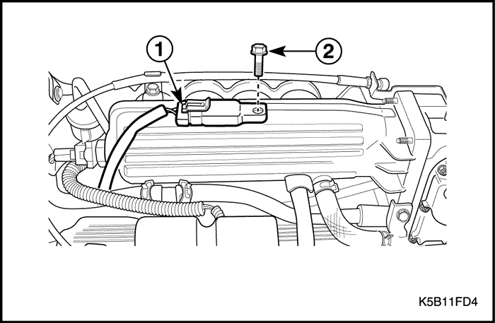
Sensor de presión absoluta del colector de admisión
Procedimiento de desmontaje
- Desenchufe el conector del sensor de presión absoluta del colector de admisión (MAP).
- Desenchufe el conector del MAP (1).
- Desmonte el MAP.
- Retire los tornillos (2).
Procedimiento de montaje
- Para el montaje, repita en orden inverso el procedimiento de desmontaje.
- Monte el MAP con sus tornillos.
Apretar
Apriete los tornillos del MAP hasta 6-10 N•m (53-89 lb-pulg.).
Cuerpo del acelerador (0.8L)
Procedimiento de desmontaje
- Desmonte el conjunto de resonador/filtro de aire y el tubo de admisión de aire. Consulte la Sección 1B1, Mecánica del motor SOHC.
- Vacíe el refrigerante del motor. Consulte la Sección 1D, Sistema de refrigeración del motor.
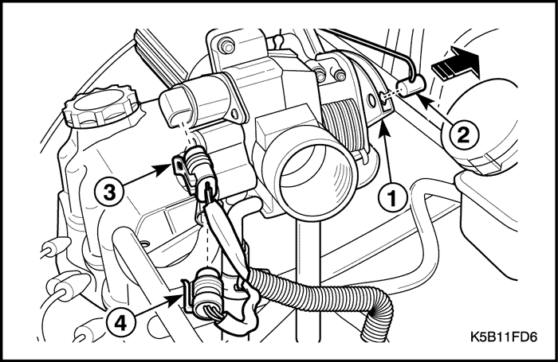
- Desenchufe los conectores del cable del acelerador, del sensor de posición del acelerador y de la válvula de control del aire de ralentí.
- Abra la válvula del acelerador (1).
- Desconecte el cable del acelerador (2).
- Desenchufe el conector de la válvula de control del aire de ralentí (3).
- Desenchufe el conector del sensor de posición del acelerador (4).
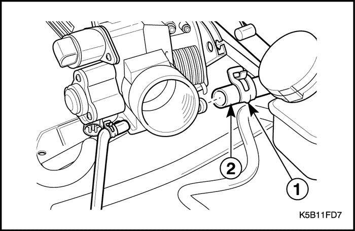
- Desconecte del cuerpo del acelerador los manguitos de vacío y de refrigerante.
- Afloje las abrazaderas de los manguitos de refrigerante (1).
- Desconecte del cuerpo del acelerador los manguitos de refrigerante (2).
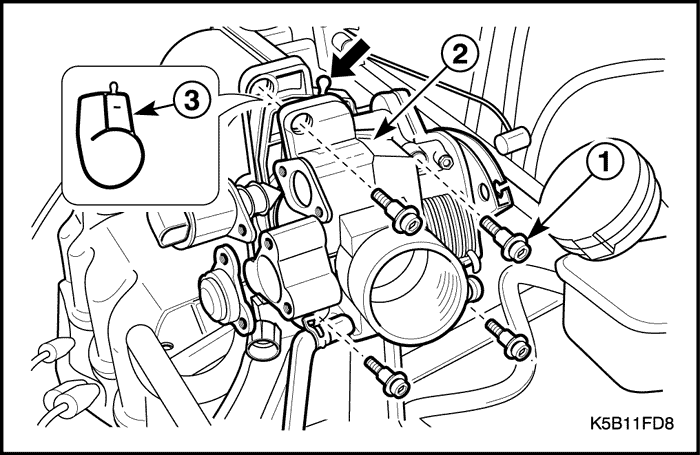
- Desmonte del colector de admisión el cuerpo del acelerador.
- Quite los tornillos del cuerpo del acelerador (1).
- Desmonte el cuerpo del acelerador (2).
- Deseche la junta del cuerpo del acelerador (3).
- Compruebe si la junta del cuerpo del acelerador está deformada o dañada.
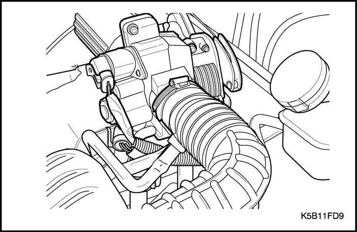
Procedimiento de montaje
- Para el montaje, repita en orden inverso el procedimiento de desmontaje.
Importante: Asegúrese de que el cable de control del acelerador no mantenga el acelerador abierto. Con el motor apagado, compruebe que el pedal del acelerador esté libre.
- Monte el cuerpo del acelerador con sus tornillos.
Apretar
Apriete los tornillos del cuerpo del acelerador hasta 9-12 N•m (80-106 lb-pulg.).
Cuerpo del acelerador (1.0L)
Procedimiento de desmontaje
- Desmonte el conjunto de resonador/filtro de aire y el tubo de admisión de aire. Consulte la Sección 1B1, Mecánica del motor SOHC.
- Vacíe el refrigerante del motor. Consulte la Sección 1D, Sistema de refrigeración del motor.
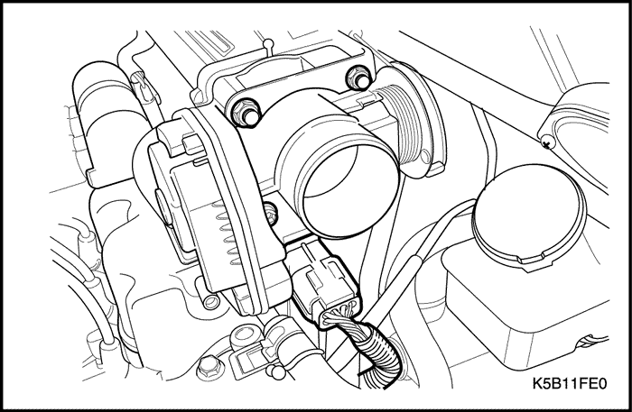
- Desenchufe los conectores del cable del acelerador, del sensor de posición del acelerador y de la válvula de control del aire de ralentí.
- Abra la válvula del acelerador.
- Desconecte el cable del acelerador.
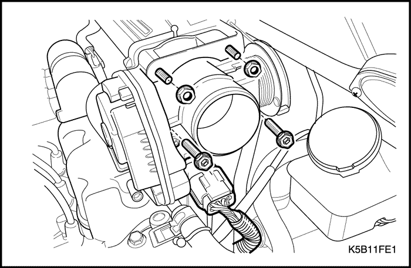
- Desmonte del colector de admisión el cuerpo del acelerador.
- Quite los tornillos y las tuercas del cuerpo del acelerador.
- Desmonte el cuerpo del acelerador.
- Deseche la junta del cuerpo del acelerador.
- Compruebe si la junta del cuerpo del acelerador está deformada o dañada.
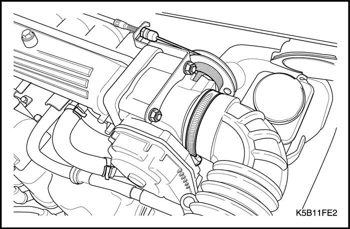
Procedimiento de montaje
- Para el montaje, repita en orden inverso el procedimiento de desmontaje.
Importante: Asegúrese de que el cable de control del acelerador no mantenga el acelerador abierto. Con el motor apagado, compruebe que el pedal del acelerador esté libre.
- Monte el cuerpo del acelerador con sus tornillos.
Apretar
Apriete los tornillos del cuerpo del acelerador hasta 9-12 N•m (80-106 lb-pulg.).
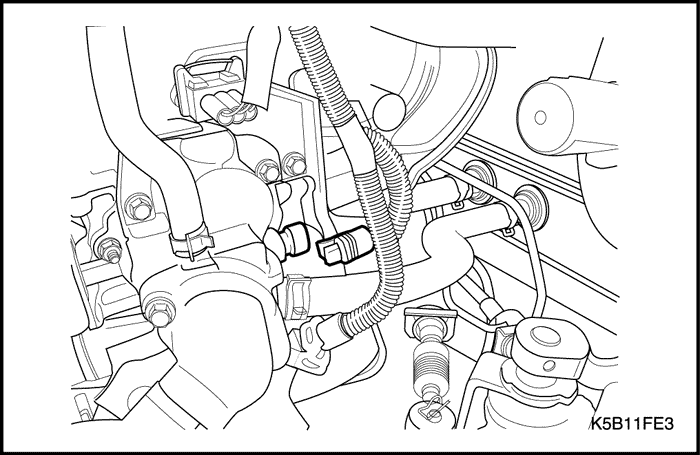
Sensor de temperatura del refrigerante del motor (ECT)
Procedimiento de desmontaje
- Desmonte el sensor de la temperatura del refrigerante del motor (ECT). Consulte la Sección 1D, Sistema de refrigeración del motor.
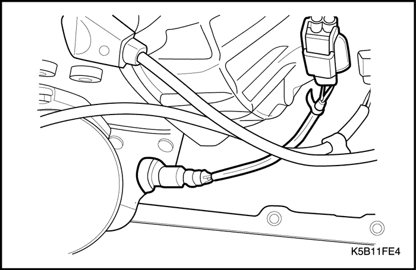
Procedimiento de montaje
- Monte el sensor de temperatura del refrigerante del motor.
Apretar
Apriete el sensor de temperatura de refrigerante del motor hasta 12-20 N•m (9-15 lb-pie).
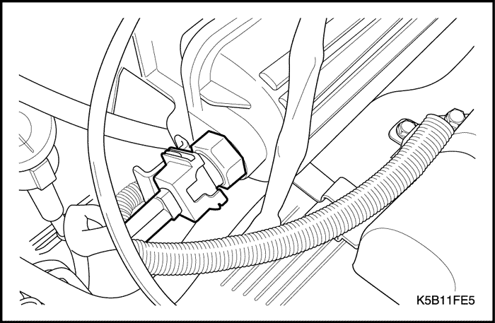
Sensor de temperatura del aire de admisión (IAT)
Procedimiento de desmontaje
- Desconecte el cable negativo de la batería.
- Desmonte el sensor de temperatura del aire de admisión (IAT).
- Desenchufe el conector del IAT.
- Desconecte el IAT.
Procedimiento de montaje
- Para el montaje, repita en orden inverso el procedimiento de desmontaje.
- Monte el IAT.
Apretar
Apriete el tornillo del IAT hasta 20-30 N•m (15-22 lb-pie).
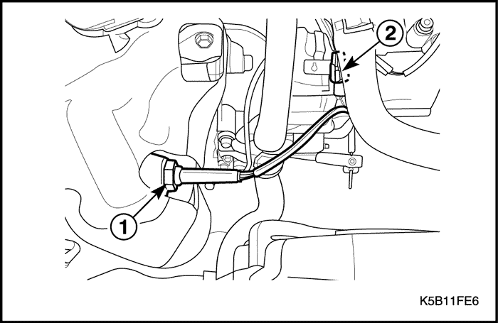
Sensor de oxígeno (HO2S1)
Procedimiento de desmontaje
- Desmonte el conjunto de resonador/filtro de aire. Consulte la Sección 1B1, Mecánica del motor SOHC.
- Desmonte el sensor de oxígeno.
- Desenchufe el conector del sensor de oxígeno (1).
- Desmonte el sensor de oxígeno (2).
Aviso: El sensor de oxígeno utiliza un cable espiral y un conector que están permanentemente unidos al mismo. Dicho cable espiral no debe separarse del sensor de oxígeno. Si el cable espiral se quitara o resultara dañado, el funcionamiento adecuado del sensor de oxígeno se podría ver afectado. Maneje con cuidado el sensor de oxígeno. No lo deje caer al suelo.
Procedimiento de montaje
- Para el montaje, repita en orden inverso el procedimiento de desmontaje.
Importante: Se utiliza un producto antigripaje en las roscas del sensor de oxígeno. Dicho producto está compuesto de grafito líquido y cuentas de vidrio. El grafito se consumirá, pero no las cuentas de vidrio, lo cual facilita que se desmonte el sensor. Los sensores nuevos o de reciclado ya vendrán con el compuesto aplicado a las roscas. Si se desmonta el sensor de algún motor y, por alguna razón, tiene que volverse montar, se debe aplicar el producto antigripaje a las roscas antes de reinstalar dicho sensor.
- Monte el sensor de oxígeno.
Apretar
Apriete la sonda lambda calentada delantera hasta 38-46 N•m (28-34 lb-pie).
Sonda lambda calentada (HO2S2)
Procedimiento de desmontaje
- Desconecte el cable negativo de la batería.
- Desmonte la consola central delantera.
- Desenchufe el conector de la HO2S2.
- Desmonte el tubo de escape delantero. Consulte la Sección 1G, Sistema de escape del motor.
- Desmonte del tubo de escape delantero la HO2S2.
Procedimiento de montaje
- Para el montaje, repita en orden inverso el procedimiento de desmontaje.
Importante: Se utiliza un producto antigripaje en las roscas del sensor de oxígeno. Dicho producto está compuesto de grafito líquido y cuentas de vidrio. El grafito se consumirá, pero no las cuentas de vidrio, lo cual facilita que se desmonte el sensor. Los sensores nuevos o de reciclado ya vendrán con el compuesto aplicado a las roscas. Si se desmonta el sensor de algún motor y, por alguna razón, tiene que volverse montar, se debe aplicar el producto antigripaje a las roscas antes de reinstalar dicho sensor.
- Monte el sensor de oxígeno.
Apretar
Apriete el sensor de oxígeno hasta 38-46 N•m (28-34 lb-pie).
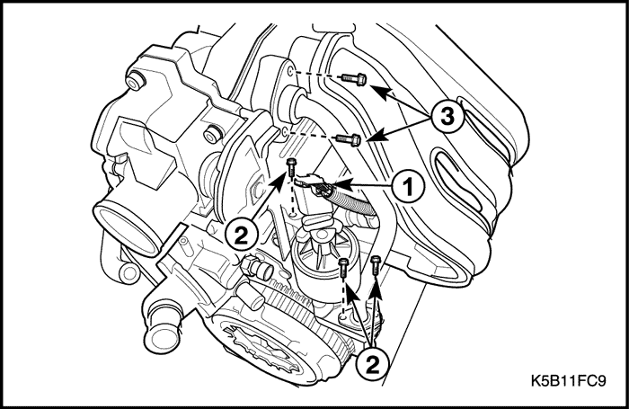
Tubo y electroválvula de recirculación de gases de escape
Procedimiento de desmontaje
- Desconecte el cable negativo de la batería.
- Desmonte el conjunto de filtro del aire. Consulte la Sección 1B1, Mecánica del motor SOHC.
- Desmonte el tubo y la válvula de recirculación de gases de escape lineal (LEGR).
- Desenchufe el conector de la válvula de LEGR (1).
- Quite los tornillos de la válvula de LEGR (2).
- Quite los tornillos del tubo de LEGR (3).
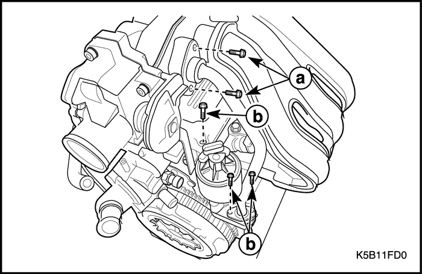
Procedimiento de montaje
- Para el montaje, repita en orden inverso el procedimiento de desmontaje.
- Monte el tubo y la válvula de LEGR.
- Monte el tubo de la válvula de LEGR (a).
- Monte la válvula de LEGR (b).
Apretar
- Apriete el tubo de la válvula de LEGR (a) hasta 18-28 N•m (13-21 lb-pie).
- Apriete la válvula de LEGR (b) hasta 18-28 N•m (13-21 lb-pie).
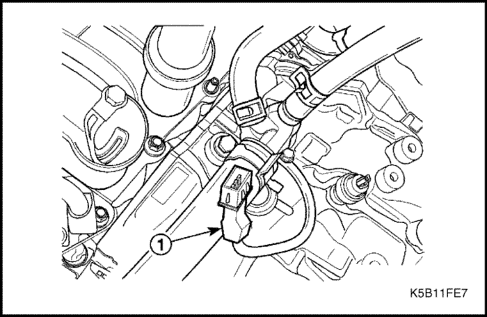
Sensor de picado de bielas
Procedimiento de desmontaje
- Desconecte el cable negativo de la batería.
- Desmonte el motor de arranque. Consulte la sección 1E, Sistema eléctrico del motor.
- Desenchufe el conector eléctrico del sensor de picado de bielas (1).
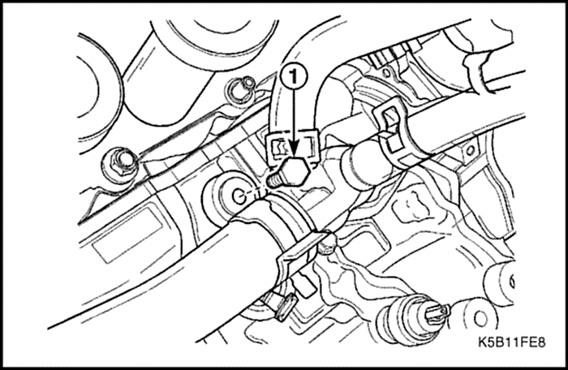
- Desmonte el sensor de picado de bielas.
- Quite el tornillo de fijación del sensor de picado de bielas (1).
- Desmonte el sensor de picado de bielas.
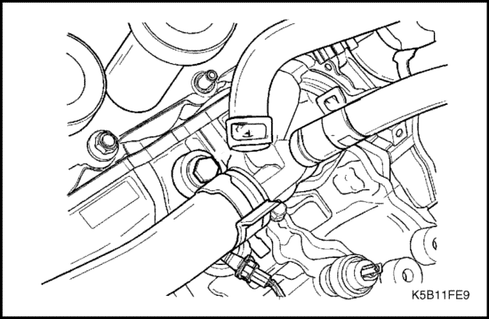
Procedimiento de montaje
- Monte el sensor de picado de bielas con su tornillo.
Apretar
Apriete el tornillo de retención del sensor de picado de bielas hasta 15-25 N•m (11-18 lb-pie).
- Enchufe el conector eléctrico al sensor de picado de bielas.
- Monte el motor de arranque. Consulte la sección 1E, Sistema eléctrico del motor.
- Conecte el cable negativo de la batería.
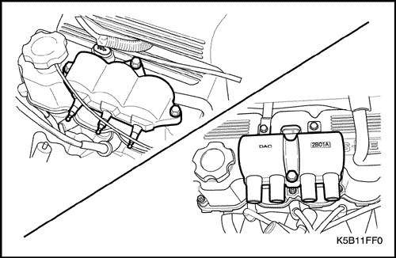
Bobina de encendido del sistema de encendido electrónico (EI)
Procedimiento de desmontaje
- Desconecte el cable negativo de la batería.
- Tome nota de la posición de los cables de encendido y desconéctelos de la bobina de encendido del sistema EI.
- Desenchufe el conector de la bobina de encendido del sistema EI.
- Quite los tornillos de retención de la bobina del sistema EI.
- Desmonte la bobina del sistema EI.
Procedimiento de montaje
- Monte la bobina del sistema de encendido EI.
- Apriete la bobina del sistema EI hasta 8-12 N•m (71-106 lb-pulg.).
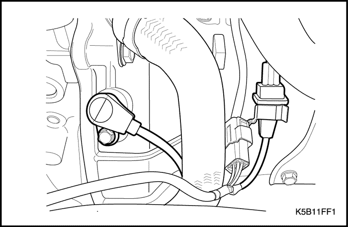
Sensor de posición del cigüeñal (CKP)
Procedimiento de desmontaje
- Desconecte el cable negativo de la batería.
- Desmonte el conjunto de filtro del aire.
- Desenchufe el conector del sensor de posición del cigüeñal (CKP).
- Quite el tornillo de retención del CKP.
Procedimiento de montaje
- Monte el CKP.
- Apriete el tornillo de retención del CKP hasta 5-8 N•m (44-71 lb-pulg.).
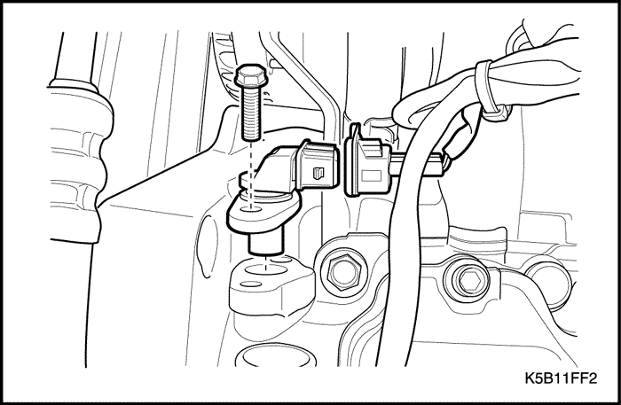
Sensor de posición del árbol de levas (CMP)
Procedimiento de desmontaje
- Desconecte el cable negativo de la batería.
- Desenchufe el conector del sensor de posición del árbol de levas (CMP).
- Quite el tornillo de retención del CMP.
- Desmonte el CMP.
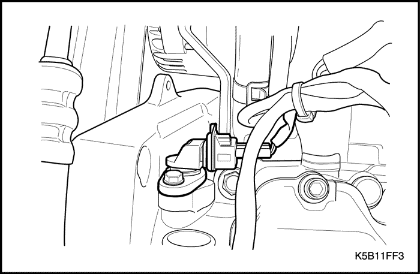
Procedimiento de montaje
- Monte el CMP.
- Apriete el tornillo de retención del CMP hasta 10-14 N•m (89-124 lb-pulg.).
Módulo de control electrónico del motor (ECM)
Procedimiento de desmontaje
- Desconecte el cable negativo de la batería.
- Desmonte el conjunto de filtro del aire. Consulte la Sección 1B1, Mecánica del motor SOHC.
- Desmonte la batería. Consulte la Sección 1E, Batería y bandeja portabatería.
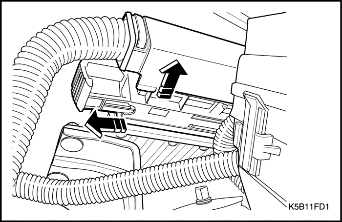
- Desenchufe el conector del ECM.
- Tire de la palanca del conector del ECM.
- Aparte la caja de fusibles para desmontar el ECM.
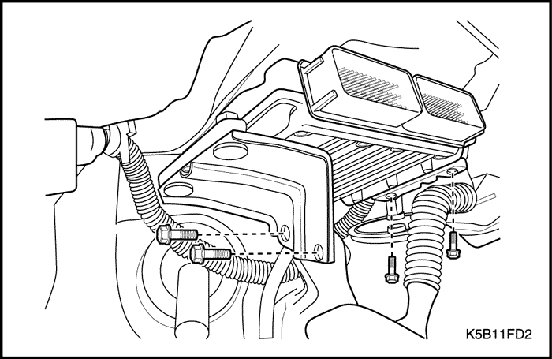
- Desmonte el ECM.
- Quite los tornillos y los tornillos del soporte.
Procedimiento de montaje
- Para el montaje, repita en orden inverso el procedimiento de desmontaje.
- Monte el ECM.
- Coloque los tornillos del ECM y los tornillos del soporte del ECM.
Apretar
- Apriete los tornillos del ECM (a) hasta 6-8 N•m (53-71 lb-pulg.).
- Apriete los tornillos del soporte del ECM (b) hasta 6-8 N•m (53-71 lb-pulg.).
| © Copyright Chevrolet Europe. Reservados todos los derechos |